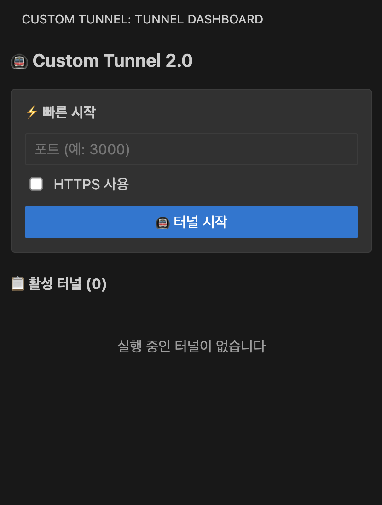
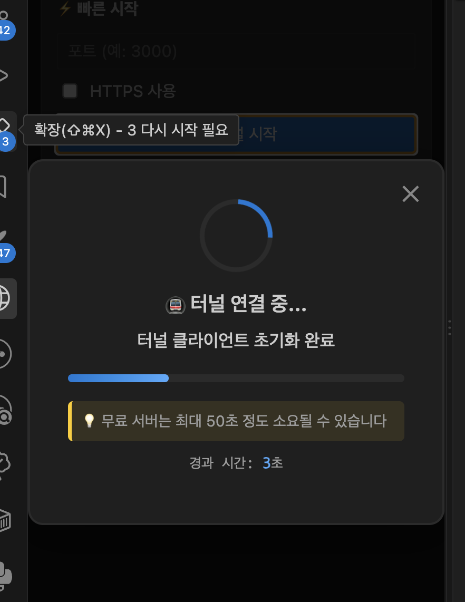
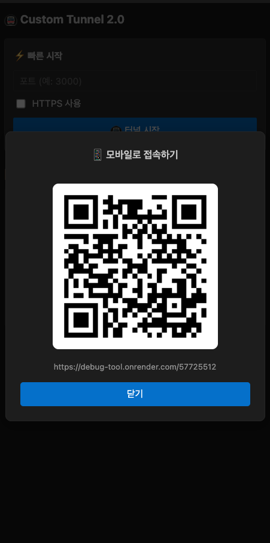
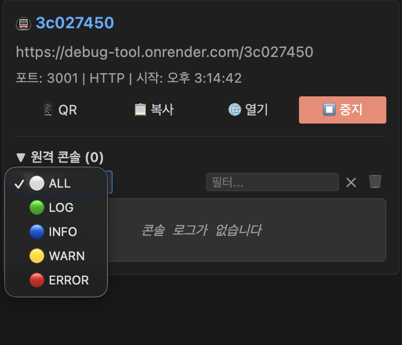

How to use
어떻게 쓰나
포트 번호 하나만 입력하면 공개 URL이 나옵니다.
-
사이드바 열기
Activity Bar의 Custom Tunnel 아이콘을 누르면 TUNNEL DASHBOARD 패널이 열립니다. 빠른 시작 폼과 활성 터널 목록이 한 화면에 있습니다.

대시보드 초기 화면 포트 입력 → HTTPS 여부 체크 → 터널 시작, 세 단계가 전부입니다. -
터널 시작
포트 입력창에 로컬 개발 서버 포트(예:
3000)를 넣고 터널 시작을 누릅니다. 로컬 서버가 HTTPS로 뜬다면 체크박스를 함께 켭니다.무료 호스팅 특성상 릴레이 서버가 Sleep 상태였다면, 깨우는 동안 Wake-up 진행률이 단계별로 표시됩니다. 아무 반응 없이 기다리게 두지 않으려고 넣은 장치입니다.

Wake-up 진행률 지금 어느 단계인지( 터널 클라이언트 초기화 완료), 얼마나 걸릴 수 있는지(최대 50초), 얼마나 지났는지(경과 시간)를 한 화면에 뒀습니다. 세 가지가 다 있어야 기다릴 수 있습니다 — 진행률만 있으면 멈춘 건지 알 수 없고, 예상 시간이 없으면 50초를 고장으로 오해합니다. -
공개 URL 확인과 제어
터널이 열리면 활성 터널 목록에 항목이 생기고, 터널 ID·공개 URL·포트·HTTPS 여부·시작 시각이 함께 표시됩니다.

활성 터널 항목 QR·복사·열기·중지 네 버튼으로 제어하고, 아래 원격 콘솔은 접었다 펼 수 있습니다. -
QR로 폰에서 바로 열기
QR 버튼을 누르면 접속 URL이 QR 코드로 뜹니다. 폰 카메라로 찍으면 그대로 열립니다 — URL을 메신저로 보내 옮기던 과정을 없앤 부분입니다.

QR 팝업 코드 아래에 URL도 같이 띄워, 카메라가 안 되는 상황이면 직접 입력할 수 있게 했습니다. -
콘솔 로그 보기
터널 항목의 원격 콘솔을 펼치면, 터널로 접속한 페이지의
console출력이 에디터로 실시간 전달됩니다. 콘솔을 열기 어려운 기기에서 특히 쓸모가 큽니다.- 레벨 드롭다운으로 ALL / LOG / INFO / WARN / ERROR 필터링
- 검색창에 키워드를 넣어 원하는 로그만 표시
- 휴지통 아이콘으로 전체 지우기

원격 콘솔 레벨별 색 구분과 키워드 필터로, 폰에서만 재현되는 버그의 로그를 좁혀 봅니다. -
중지
중지 버튼을 누르면 해당 터널이 닫히고 목록에서 사라집니다. 명령 팔레트의
Tunnel: Stop Tunnel로도 같은 동작을 합니다.